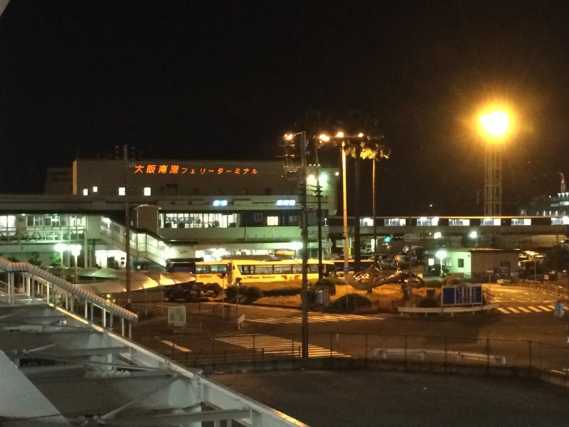
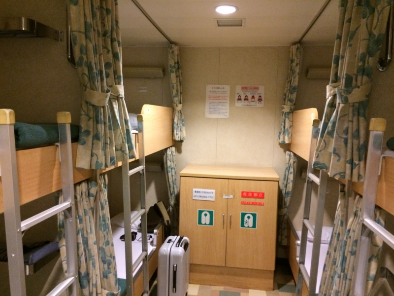
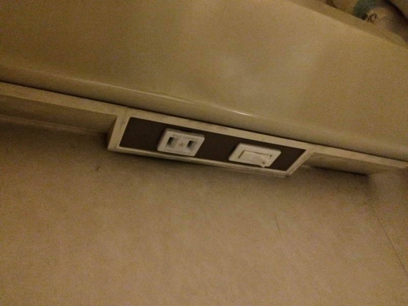
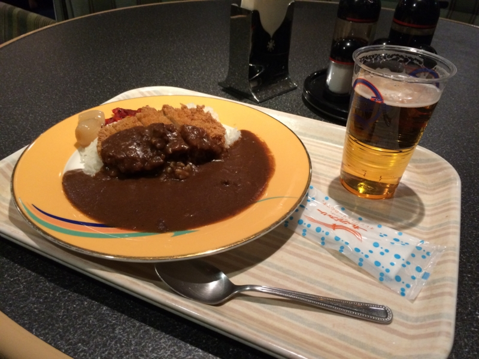
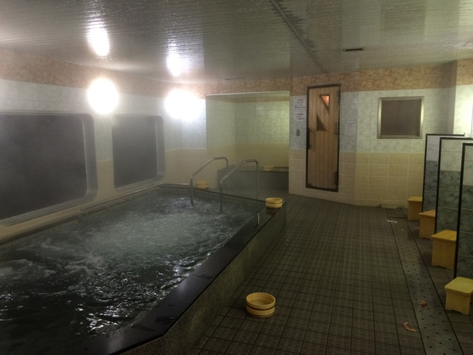
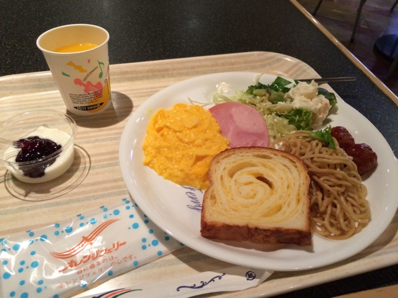
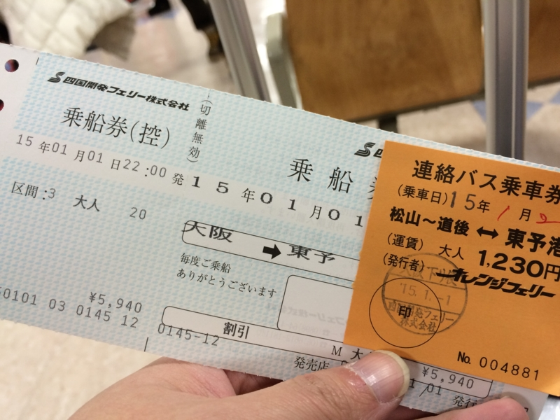

大阪・南港から愛媛・松山まで船で帰ってきた。
執筆日時：

今年の正月は、大阪・築港のばあちゃんちで過ごした。弟1号も東京から来たので、寿司の出前を取ったら、親戚が娘とピザを連れて現れたので、トイレに行くふりをしてお年玉袋にお金を詰めてばら撒いた。ついでに、ばあちゃんにもお年玉をあげた。最近は自分のダメさ加減にウンザリしているのだけど、こういうときは、まぁ、自分もオトナの端くれに列する資格を得たのではないかとわずかに慰めることができる。
そんなこんなで、かなりのんびりお正月を楽しんでいたのだけど、ずっとこうしているわけにもいかぬ。夕方6時ごろに退散。愛媛に帰ることにした。今回は、南港から船に乗って帰るつもりだ。
大阪から愛媛へは、オレンジフェリーが利用できる。
東予港で止まってしまい、そこから先、松山へ行くにはバスを利用することになるのが面倒だが（昔は松山まで来ることもあったらしい）、もともと船旅は好きなので、一度体験してみたかった。結論から言えば、夜行の高速バスを使うぐらいなら、こっちを使う方がいいと思う。
乗船まで
フェリーに乗るには、予約が必要だ。オンラインで予約をすると予約番号がもらえるので、当日、受付で乗船票にそれを書いて切符を買う。注意しなければならないのは、クレジットカードが使えないこと。正月だと銀行からお金が下せないことがあると思うが、「クレジットカードがあるから大丈夫」と油断していると死ねる。
料金
| 客室名 | 定員 | 料金 | 設備 |
|---|---|---|---|
| 特 別 室 | ２名 | 16,240円（1名利用は借り切り料金） | 展望浴室／トイレ／テレビ／ソファー／アメニティーセット／ティーセット／浴衣 |
| 特等室A | ２名 | 11,100円（1名利用は借り切り料金） | テレビ／ソファー／アメニティーセット／ティーセット／浴衣 |
| 特等室B | ４名 | 10,070円 | テレビ／ソファー（座椅子）／アメニティーセット／ティーセット／浴衣 |
| １等客室 | ４名 | 9,040円 | テレビ／ソファー／アメニティーセット／浴衣 |
| ２等寝台 | ８名 | 6,990円 | 浴衣 |
| ２等客室 | - | 5,960円 | 全席指定（１２名定員～２８名定員） |

今回は8人部屋の「２等寝台」をチョイス。これが一番無難なのではないかな。まぁ、寝るだけならまったく問題ない。実際、ぐっすり眠れた。

コンセントがあるので携帯の充電は問題ない。ただし、電波はほとんど入らないようで、ネットがしたければロビーに出るよりほかない。ロビーに出れば、出航後もおおむね電波が届くようだ。
本当であれば奮発して「特別室」にしてもよかったのだけど（展望浴室、ちょっと行ってみたい！）、1名での利用では貸し切り料金となるらしい。そもそも“お一人様”はお呼びでないのだろう。もし万が一彼女でもできたら使ってみたいものだ。
「１等客室」や「特等室」などの中間のグレードは、1人で利用するには中途半端な気がする（どうしてもテレビが見たいというのなら別だが）。ただ、「特等室」以上のグレードでないとは入れないエリアがあるみたいなので、次乗る時は「特等室B」にしてみようかなと思う。
「２等客室」は、小さい頃に乗った記憶だと、広い部屋に雑魚寝だった気がする。寝台が要らないという猛者や、お金のない学生ならばこれで十分なのだろう。あと、電源があるのかどうか心配。ロビーで携帯いじりながら過ごしてもいいのだけど、充電できないといやだな。
ロビーで寝てる人がいたのだけど、彼はきっと「２等客室」の客だったのだと思う。しかし、どうにも窮屈そうで、個人的には 1,000円で横になれるならそっちをチョイスした方がいいと感じる。値段の安さだけを考えれば夜行バスのほうが安いし、松山まで帰ることを考えれば乗り換えも要らず便利だ。
出航まで
出航は 22:00 だが、乗船は 20:00 から OK。実際にはもっと早めから乗れるようだ（19:30 ぐらいからかな？ いつもそうなのかは知らないが）。

ディナーの料金が割とリーズナブル（カツカレーで500円台だったかな）なので、メシでも食うといいと思う。

大浴場もある……ちょっとカビくさい感じはしたけど。夜中の三時に目が覚めたので入ってみたが、独り占めできて楽しかった。ただ、やっぱり9時ぐらいは混んでる感じ。
外にも出てみたかったが、その日はあいにく風が強く、立ち入り禁止になっていた。
到着

東予港の到着は 6:00（7:00 まで船内で滞在できるのだそうだ）。5:30 から食堂が開くので、バイキング形式の朝ごはんを楽しむ。朝からポンジュースをお代わりしてやった。
ただ、朝食券は800円ちょっとするので、ディナーのリーズナブルさを思うと、ちょっと二の足を踏んでしまうお値段かも。もともと朝ごはんを食べない人でもあるし、次からは利用しない気がする。

東予港から松山までは、バスで1時間ほど。バスは 6:20 発なので、7:30 には着く計算だ（バスの発車が早く、のんびり朝ごはんを食べてる時間がないというのも、朝食券の購入に躊躇する原因の一つ）。

バス代は1,230円。フェリー代に謎の割引が効いたので、全部で 7,000 円ちょっとだった。夜行バスの1,000円増しぐらいだが、お風呂にはいれて横にもなれるし、割高感はない。
注意したいところ
- 松山 →（東予港）→ 大阪 の場合は、連絡バスで東予港へ行くことになるが、フェリーはバスの到着を待ってくれない。まぁ、渋滞に巻き込まれて遅れるなんてことはまずないだろうけど。気になるなら壬生川まで JR に乗ればいいが、壬生川駅から東予港のフェリーターミナルまではタクシーで10分かかることをあらかじめ織り込んでおこう。
- 自転車の持ち込み可（袋に入れること）。ただし、バスに持ち込めるのは壬生川行きだけなので注意。松山まで帰るには、JR を使うことになる。
また使うと思うし、運賃・料金表 | 平成26年度の「おれんじ会」 | オレンジフェリー｜四国開発フェリー株式会社 入っちゃおうかな。